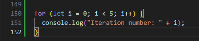
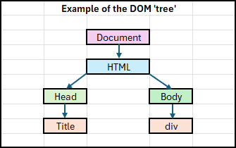
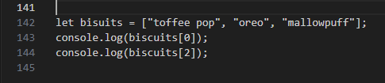
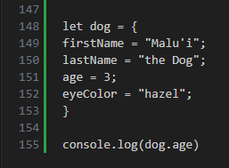
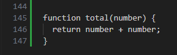

Using a house as an analogy, HTML is the foundation, including the walls, pillars, roofing, and the floor. CSS is the paint, the furniture, and the overall style of the house. JavaScript is the electricity, the lighting, the taps, the heating, and the other interactable things that make a house "come to life" and make it livable.
In short, HTML and CSS build the content and style of a website, while JavaScript interacts with the HTML and CSS to make a website useful, allowing people to perform actions on the site.
Control Flow is the order of execution of statements in code. JavaScript executes statements in order from the top of the code to the bottom, but by using different statement types such as loops and conditionals, a programmer can manipulate the Control Flow and sequence events differently.
Loops are a type of statement in JavaScript that can execute a block of code numerous times, each with a different value. There are different kinds of loops that can run through blocks of code in different ways to achieve a variety of outcomes. Some examples of different loop types include 'for', 'for/of', and 'while'.
The below example shows a simple loop. The 'i' stands for iterator, as in one iteration of the loop. "i = 0" is where the loop will begin (0 in this case is the first loop). "i < 5" indicates how many loops will take place, in this case, it will loop as long as the iteration number is less than 5 (so it will run four times). "i++" is what happens at the end of the execution of the code. In this case, the code will increase numerically by 1 at the end of each loop (0+1=1, 1+1=2, etc.).
Using an analogy from everyday life, making a coffee at a coffee machine, there's a default sequence of events that are followed (the Control Flow). First you need to grind the coffee beans, percolate the coffee grinds, empty the portafilter and rinse it, and then froth the milk. At this point, a loop is introduced that alters the Control Flow. You can choose not to have milk, at which point the sequence ends, or you can froth cow's milk, or oat milk, or almond milk, or soy milk. Another loop is introduced with the option to add extras, such as going to the cupboard to add cinnamon, going to the cupboard to add chocolate, or marshmallows, or nutmeg, or sugar.
DOM stands for Document Object Model. It is a tree-shaped representation of a web page that is created when the web page is loaded by the browser. It links HTML and JavaScript, allowing JavaScript to identify and alter the HTML elements in various ways. Each HTML element is represented within the DOM as a node.
The difference in accessing data from arrays and objects comes down to how the data is arranged within their respective collections.
Arrays arrange data in a numerical list starting at the number 0, then 1, 2, 3, etc. Arrays are useful for lists of similar items where the order is somehow important. In the example below, the code console logs the first (0, the toffee pop) and third (2, the mallowpuff) items in the array.
Objects arrange data in an unordered list, where each property (named value) is attached to a unique key. Objects are useful for representing items that are unique. The example below shows the creation of an object, in this case "dog", assigns it four properties, and then console logs one of those properties.
A JavaScript function is a block of code that peforms a task or calculates a value when other code calls it. Functions are used when you want the same code to be executed many times, avoiding the need to repeat the code manually over and over again.
The example below is a very simple function called 'total'. When called by other code, this function will return the result of the parameter (number) plus itself.
